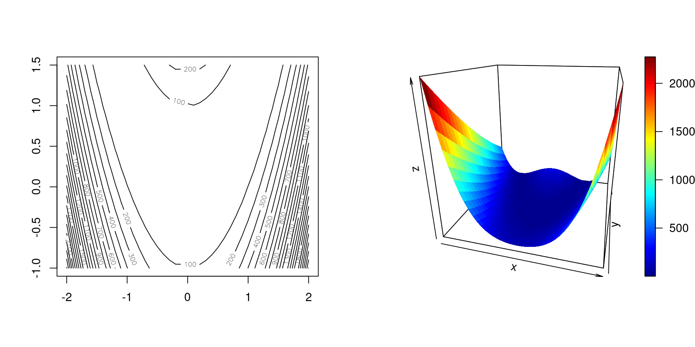
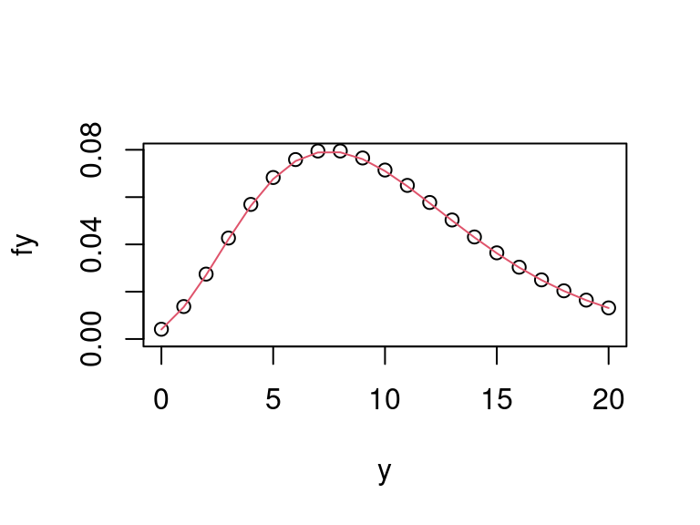
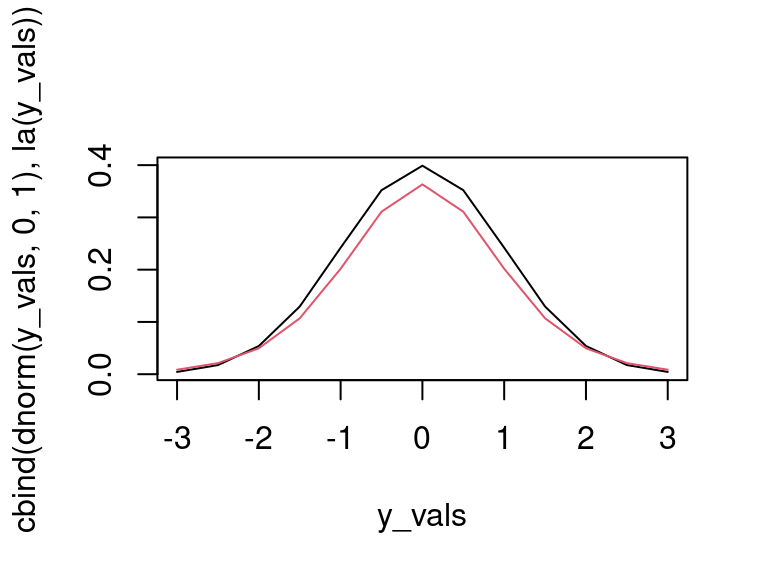
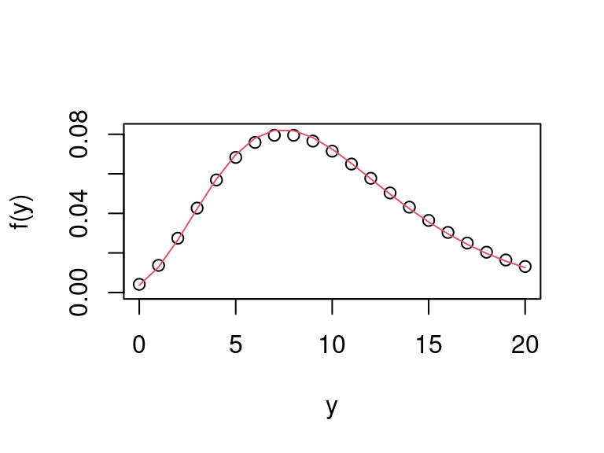
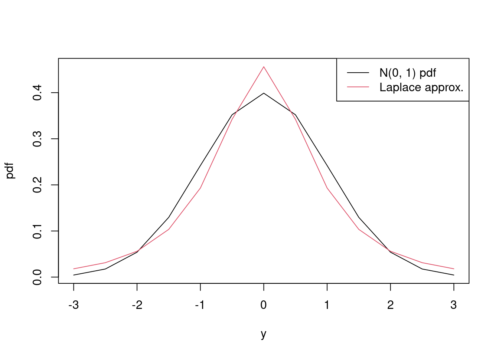

4 Chapter 4 exercises
For \(f(x) = \text{e}^{2x}\) approximate \(f'(x)\) by finite-differencing with \(\delta = 10^{-6}\). Use \(x = -1.0, -0.9, \ldots, 0.9, 1.0\) and find the difference between your approximations and the true derivatives.
Solution
The following calculates the finite-difference approximation to the derivative for \(x = -1.0, -0.9, \ldots, 0.9, 1.0\) and \(\delta = 10^{-6}\).
Then the following calculates the true derivative for the stated \(x\) values as
trueand calculates its difference from the finite-difference approximations.## [1] 2.706593e-07 3.306135e-07 4.038067e-07 4.932252e-07 6.023919e-07 7.357217e-07 8.986189e-07 1.097651e-06 ## [9] 1.340685e-06 1.637477e-06 2.000013e-06 2.442704e-06 2.983658e-06 3.644212e-06 4.450992e-06 5.436657e-06 ## [17] 6.640438e-06 8.110137e-06 9.906360e-06 1.210034e-05 1.477673e-05Looking at the range of the differences
## [1] 2.706593e-07 1.477673e-05we see that finite-differencing overestimates the true derivative for all the \(x\) values, but at most only by a small amount, i.e. \(< 2 \times 10^{-5}\).
The normal pdf, denoted \(\phi(y; \mu, \sigma^2)\), where \(\mu\) is its mean and \(\sigma^2\) is its variance, is defined as \[ \phi(y; \mu, \sigma^2) = \dfrac{\text{d} \Phi(y; \mu, \sigma^2)}{\text{d} y}\] where \(\Phi(y; \mu, \sigma^2)\) denotes its corresponding cdf. Confirm this result by finite-differencing for \(y = -2, -1, 0, 1, 2\), \(\mu = 0\) and \(\sigma^2 = 1\) using
pnorm()to evaluate \(\Phi(y; \mu, \sigma^2)\).
Solution
We’ll start by defining the \(y\) values
Then we’ll evaluate \(\Phi(y; \mu, \sigma^2)\) and \(\Phi(y + \delta; \mu, \sigma^2)\) for these \(y\) values, choosing \(\delta = 10^{-6}\).
The finite-difference approximation is then given by \([\Phi(y + \delta; \mu, \sigma^2) - \Phi(y; \mu, \sigma^2)] / \delta\), which we can calculate in
Rwith the following.## [1] 0.05399102 0.24197085 0.39894228 0.24197060 0.05399091We can then compare this to
R’sdnorm()function## [1] "Mean relative difference: 3.53179e-07"and see that the two are approximately equal. (We shouldn’t expect exact equality because
pnorm()is only an approximation to \(\Phi(y; \mu, \sigma^2)\), since the normal distribution’s cdf doesn’t have closed form, and because finite-differencing is only an approximation.)The Rosenbrock function (sometimes called the banana function) is given by \[f(\mathbf{x})=(a - x_1)^2 + b (x_2 - x_1^2)^2,\] where \(\mathbf{x} = (x_1, x_2)^{\text{T}}\).
Write a function,
rosenbrock(x, a, b), to evaluate the Rosenbrock function inRfor vector \(\mathbf{x} =\)xand scalars \(a =\)aand \(b =\)b, with default valuesa = 1andb = 100, and evaluate the function at \(\mathbf{x}_0 = (1, 2)^{\text{T}}\) with the default values of \(a\) and \(b\).
Solution
rosenbrock <- function(x, a = 1, b = 100) { # function to evaluate Rosenbrock's banana function # x, a and b are scalars # returns a scalar (a - x[1])^2 + b * (x[2] - x[1]^2)^2 } x0 <- c(1, 2) rosenbrock(x0)## [1] 100It’s also useful to plot the function, so that we know what we’re dealing with. The following gives a contour plot and coloured surface plot.
par(mfrow = 1:2) x1 <- seq(-2, 2, by = .1) x2 <- seq(-1, 1.5, by = .1) x12_grid <- expand.grid(x1 = x1, x2 = x2) f12 <- matrix(apply(x12_grid, 1, rosenbrock), length(x1)) contour(x1, x2, f12, nlevels = 20) x1_mat <- matrix(x12_grid$x1, length(x1)) x2_mat <- matrix(x12_grid$x2, length(x1)) plot3D::surf3D(x1_mat, x2_mat, f12, colvar = f12, colkey = TRUE, box = TRUE, bty = "b", phi = 20, theta = 15)Figure 4.1: Rosenbrock’s function as a contour plot (left) and surface plot (right).
As we see, Rosenbrock’s function is a rather complicated function.
Find \(\partial f(\mathbf{x}) / \partial x_1\) and \(\partial f(\mathbf{x}) / \partial x_2\) and then write a function in
R,rosenbrock_d1(x, a, b), that returns the vector \((\partial f(\mathbf{x}) / \partial x_1, \partial f(\mathbf{x}) / \partial x_2)^{\text{T}}\) and has the same default values asrosenbrock(), and then evaluate this gradient operator for \(\mathbf{x}_0 = (1, 2)^{\text{T}}\) and the default values of \(a\) and \(b\).
Solution
The partial derivatives are \[\dfrac{\partial f(\mathbf{x})}{\partial x_1} = -2(a - x_1) - 4bx_1(x_2 - x_1^2) \text{ and } \dfrac{\partial f(\mathbf{x})}{\partial x_2} = 2b(x_2 - x_1^2),\] which can be evaluated in
Rwithrosenbrock_d1 <- function(x, a = 1, b = 100) { # function to evaluate first partial derivatives # of Rosenbrock's banana function # x, a and b are scalars # returns a 2-vector d_x2 <- 2 * b * (x[2] - x[1]^2) c(-2 * (a - x[1]) - 2 * x[1] * d_x2, d_x2) }and for \(\mathbf{x}_0\) and the default values of \(a\) and \(b\) we get
## [1] -400 200Find \(\partial^2 f(\mathbf{x}) / \partial x_1^2\), \(\partial^2 f(\mathbf{x}) / \partial x_1 \partial x_2\) and \(\partial^2 f(\mathbf{x}) / \partial x_2^2\) and then write a function in
R,rosenbrock_d2(x, a, b), that returns the \(2 \times 2\) Hessian matrix of \(f(\mathbf{x})\) and has the same default values asrosenbrock(), and then evaluate this Hessian matrix for \(\mathbf{x}_0 = (1, 2)^{\text{T}}\) and the default values of \(a\) and \(b\).
Solution
The second partial derivatives are \[\dfrac{\partial f(\mathbf{x})}{\partial^2 x_1^2} = 2 - 4b(x_2 - 3x_1^2),~\dfrac{\partial f(\mathbf{x})}{\partial x_1 \partial x_2} = - 4bx_1 \text{ and } \dfrac{\partial^2 f(\mathbf{x})}{\partial x_2^2} = 2b,\] which can be evaluated in
Rwithrosenbrock_d2 <- function(x, a = 1, b = 100) { # function to evaluate second partial derivatives # of Rosenbrock's banana function # x, a and b are scalars # returns a 2 x 2 matrix d_x1x1 <- 2 - 4 * b * (x[2] - 3 * x[1]^2) d_x1x2 <- -4 * b * x[1] d_x2x2 <- 2 * b matrix(c(d_x1x1, d_x1x2, d_x1x2, d_x2x2), 2, 2) }and for \(\mathbf{x}_0\) and the default values of \(a\) and \(b\) we get
## [,1] [,2] ## [1,] 402 -400 ## [2,] -400 200Use
rosenbrock_d1()to confirm that \(\tilde{\mathbf{x}} = (1, 1)^{\text{T}}\) is a minimum of \(f(\mathbf{x})\), i.e. that gradient operator is approximately a vector of zeros at \(\tilde{\mathbf{x}} = (1, 1)^{\text{T}}\).
Solution
We’ll call \(\tilde{\mathbf{x}}\),
x_tilde,and then evaluating the first derivatives
## [1] 0 0we see that these are zero, and to confirm that the Hessian matrix is positive definite, we can confirm that all its eigenvalues are positive
H <- rosenbrock_d2(x_tilde) # Hessian matrix lambda <- eigen(H, only.values = TRUE, symmetric = TRUE)$values all(lambda > 0)## [1] TRUEwhich they are, and so \(\tilde{\mathbf{x}}\) is a minimum (although we don’t know whether it’s a local or global minimum from these two calculations).
Recall the \(MVN_p(\boldsymbol{\mu}, \boldsymbol{\Sigma})\) log-likelihood, e.g. from Example 3.2.
Find \(\partial \log f(\mathbf{y} \mid \boldsymbol{\mu}, \boldsymbol{\Sigma}) / \partial \boldsymbol{\mu}\) analytically and evaluate this for \(\mathbf{y}\), \(\boldsymbol{\mu}\) and \(\boldsymbol{\Sigma}\) as given in Example 3.2.
Solution
\[\dfrac{\partial \log f(\mathbf{y} \mid \boldsymbol{\mu}, \boldsymbol{\Sigma})}{\partial \boldsymbol{\mu}} = \boldsymbol{\Sigma}^{-1} ({\bf y} - {\boldsymbol \mu}).\]
Evaluating this for \(\mathbf{y}\), \(\boldsymbol{\mu}\) and \(\boldsymbol{\Sigma}\) as given can be done with the following code
y <- c(.7, 1.3, 2.6) mu <- 1:3 Sigma <- matrix(c(4, 2, 1, 2, 3, 2, 1, 2, 2), 3, 3) (d_mu <- solve(Sigma, y - mu))## [1] 0.08 -0.38 0.14so that \[\dfrac{\partial \log f(\mathbf{y} \mid \boldsymbol{\mu}, \boldsymbol{\Sigma})}{\partial \boldsymbol{\mu}} \simeq \begin{pmatrix}0.08 \\-0.38 \\0.14 \\\end{pmatrix}.\]
Confirm the above result by finite-differencing.
Solution
We’ll use function
fd()again from Example 4.4 of the notes.fd <- function(x, f, delta = 1e-6, ...) { # Function to evaluate derivative by finite-differencing # x is a p-vector # fn is the function for which the derivative is being calculated # delta is the finite-differencing step, which defaults to 10^{-6} # returns a vector of length x f0 <- f(x, ...) p <- length(x) f1 <- numeric(p) for (i in 1:p) { x1 <- x x1[i] <- x[i] + delta f1[i] <- f(x1, ...) } (f1 - f0) / delta }We’ll also need function
dmvn3()from Example 3.13.dmvn3 <- function(y, mu, Sigma, log = TRUE) { # Function to evaluate multivariate Normal pdf by solving # a system of linear equations via Cholesky decomposition # y and mu are vectors # Sigma is a square matrix # log is a logical # Returns scalar, on log scale, if log == TRUE. p <- length(y) res <- y - mu L <- t(chol(Sigma)) out <- - sum(log(diag(L))) - 0.5 * p * log(2 * pi) - 0.5 * sum(forwardsolve(L, res)^2) if (!log) out <- exp(out) out }Then the following approximates \(\partial \log f(\mathbf{y} \mid \boldsymbol{\mu}, \boldsymbol{\Sigma}) / \partial \boldsymbol{\mu}\) by finite-differencing
Note above that we’ve given
y = yandSigma = Sigma, then the first free argument todmvn3()ismu, and hencefd()takes this asx. The finite-differencing approximation is## [1] 0.0799998 -0.3800007 0.1399992and is the same as the analytical result
## [1] "Mean relative difference: 2.833149e-06"once we allow for error in the finite-difference approximation.
The Gamma(\(\alpha\), \(\beta\)) pdf is given by \[\begin{equation} f(y \mid \alpha, \beta) = \dfrac{\beta^\alpha}{\Gamma(\alpha)} y^{\alpha - 1} \exp(-\beta y) \quad {\text{ for }}y>0, \tag{4.1} \end{equation}\] with \(\alpha,\beta > 0\). The gamma distribution’s cdf, however, has no closed form. Approximate its cdf \(F(y \mid \alpha, \beta)\) for \(y = 1.5\), \(\alpha = 1\) and \(\beta = 2\) using the midpoint rule with \(N = 14\) and compare your result to
R’spgamma(y, alpha, beta)function.
Solution
We can use
dgamma(y, alpha, beta)to evaluate the Gamma(\(\alpha\), \(\beta\)) pdf (although it’s fine to explicitly write a function inRto evaluate \(f(y \mid \alpha, \beta)\)). Then we want to specify the integration nodes for \(N = 14\). These will be \(0.05, 0.15, \ldots, 1.35, 1.45\), if they’re equally spaced, and hence \(h = 0.1\).The following then approximates the integral as
I_midpoint.## [1] 0.9486311Using
R’spgamma()function we get## [1] 0.9502129Assuming
R’s approximation to be the more accurate (which we’ll assume in MTH3045 is always a good assumption forR’s functions for evaluating cdfs), we’ll compares the relative absolute error of the midpoint approximation topgamma(), which we’ll callrel_err## [1] 0.001664724and we see is about 0.17%.
Consider integrating a function \(f(x)\) over and arbitrary interval \([a, b]\).
Write a function to integrate \(f(x)\) over \([a, b]\) using the midpoint rule with \(N\) midpoints.
Solution
The following function,
integrate_midpoint(), integrates a function over \([a, b]\) using the midpoint rule with \(N\) midpoints.integrate_midpoint <- function(f, a, b, N) { # Function to approximate integral of f by midpoint rule over [a, b] # f is a function # a and b are scalars # N is integer number of midpoints # returns scalar ends <- seq(0, 1, l = N + 1) h <- ends[2] - ends[1] mids <- ends[-1] - .5 * h h * sum(f(mids)) }Then use this to approximate \(\int_0^1 f(x) \text{d} x\), where \[f(x) = 1 + 2 \cos(2 x) + 2 \sin(2 x)\] using the midpoint rule with \(N = 8\).
Solution
We’ll first create function \(f(x)\), which we’ll call
f,and then we’ll use
integrate_midpoint()to approximate its integral over \([0, 1]\) with \(N = 8\).## [1] 3.331511Compare your integral approximation to the exact result in terms of its relative absolute error.
Solution
As \[\begin{align*} \int_0^1 1 + 2 \cos(2 x) + 2 \sin(2 x)\text{d}x &= \left[x + \sin(2 x) - \cos(2 x)\right]_0^1 \\ &= \left[1 + \sin(2) - \cos(2)\right] - \left[\sin(0) - \cos(0) \right]\\ &= 2 + \sin(2) - \cos(2),\end{align*}\]
then the true integral is \(2 + \sin(2) - \cos(2) \simeq 3.3254\), which we’ll store as
true. The relative absolute error,rel_err, is then## [1] 0.001824388and on this occasion we see a relative absolute error of approximately 0.18%, for just \(N = 8\).
The composite trapezium rule for integration is given by \[\int_a^b f(x) \text{d}x \simeq \dfrac{h}{2}\left[f(x_1^*) + f(x_N^*) + 2\sum_{i = 2}^{N - 1} f(x_i^*)\right],\] for \(N\) integration nodes \(x_i^* = a + (i - 1)h\) where \(h = (b - a) / (N - 1)\).
Write a function,
integrate_trapezium(f, a, b, N), to implement the trapezium rule for an integral \(\int_a^b f(x)\text{d}x\) with \(N\) integration nodes.
Solution
integrate_trapezium <- function(f, a, b, N) { # Function to approximate integral of f by trapezium rule over [a, b] # f is a function # a and b are scalars # N is integer number of integration nodes # returns scalar nodes <- seq(a, b, l = N) h <- (b - a) / (N - 1) int <- 2 * sum(f(nodes[2:(N - 1)])) int <- int + sum(f(nodes[c(1, N)])) .5 * h * int }Then use
integrate_trapezium()to approximate \(F(y \mid \alpha, \beta) = \int_0^y f(z \mid \alpha, \beta) \text{d} z\) using \(N = 14\), where \(f(y \mid \alpha, \beta)\) is the gamma pdf as given in Equation (4.1).
Solution
We’ll start with a function to evaluate the Gamma(1, 2) pdf,
dgamma2(y).Then the trapezium rule approximation to \(F(1.5 \mid 1, 2)\) is given below as
I_trapezium.## [1] 0.9544261Compare your integral approximation by the trapezium rule to that of the midpoint rule by using
pgamma()as the benchmark of ‘the truth’.
Solution
rel_err <- c(midpoint = abs((I_pgamma - I_midpoint) / I_pgamma), trapezium = abs((I_pgamma - I_trapezium) / I_pgamma)) rel_err## midpoint trapezium ## 0.001664724 0.004433936We see that the relative absolute error of the trapezium rule is 0.44% and so is greater than that of the midpoint rule, given the same number of integration nodes.
Repeat Question 5 using Simpson’s rule and \(N = 14\), comparing your approximation to the actual integral and your midpoint rule approximation.
Solution
For Simpson’s composite rule, the \(N\) integration nodes are given by \(x_{1i} = a + h(2i - 1)/2\) and \(x_{2i} = a + ih\) where \(h = (b - a)/N\).
a <- 0 b <- 1.5 N <- 140 h <- (b - a) / N nodes1 <- a + h * (2*c(1:N) - 1) / 2 nodes2 <- a + h * c(1:(N - 1)) I_simpson <- dgamma2(a) + dgamma2(b) I_simpson <- I_simpson+ 4 * sum(dgamma2(nodes1)) + 2 * sum(dgamma2(nodes2)) I_simpson <- h * I_simpson / 6 I_simpson## [1] 0.9502129## [1] 7.321086e-11 1.667500e-03Repeat Question 6 using Simpson’s rule and \(N = 8\), comparing your approximation to the actual integral and your midpoint rule approximation.
Solution
integrate_simpson <- function(f, a, b, N) { # Function to approximate integral of f by Simpson's rule over [a, b] # f is a function # a and b are scalars # N is integer number of integration nodes # returns scalar h <- (b - a) / N nodes1 <- a + h * (2 * c(1:N) - 1) / 2 nodes2 <- a + h * c(1:(N - 1)) h * (f(a) + 4 * sum(f(nodes1)) + 2 * sum(f(nodes2)) + f(b)) / 6 } simpson <- integrate_simpson(f, 0, 1, 8) simpson## [1] 3.325447## [1] 9.502376e-07 1.820118e-03Simpson’s composite 3/8 rule approximates an integral as \[\int_a^b f(x) \text{d}x \simeq \dfrac{3h}{8} \left(f(a) + 3 \sum_{i=1}^{N/3} f(x_{3i - 2}^*) + 3 \sum_{i=1}^{N/3} f(x_{3i-1}^*) + 2\sum_{i = 1}^{N/3 - 1} f(x_{3i}^*) + f(b)\right),\] for integration nodes \(x_i^* = a + ih\), \(i = 1, \ldots, N - 1\), with \(h = (b - a) / N\) and where \(N\) must be a multiple of three. Approximate \(I = \int_0^1 \text{e}^x \text{d}x\) using Simpson’s 3/8 rule with \(N = 9\) nodes and find the relative absolute error of your approximation.
Solution
f <- function(x) exp(x) true <- exp(1) - 1 N <- 9 a <- 0 b <- 1 h <- (b - a) / N nodes <- a + h * (1:(N - 1)) id2 <- 3 * 1:((N / 3) - 1) # multiply by two id3 <- c(3 * (1:(N / 3)) - 1, 3 * (1:(N / 3)) - 2) # multiply by three simpson38 <- f(a) + 3 * sum(f(nodes[id3])) + 2 * sum(f(nodes[id2])) + f(b) (simpson38 <- 3 * h * simpson38 / 8)## [1] 1.718285## [1] 1.899613e-06Repeat Question 5 using Gaussian quadrature with \(N = 7\) integration nodes, comparing your approximation to the actual integral and your midpoint and Simpson’s rule approximations of questions 5 and 9, respectively.
Solution
N <- 7 gq_nodes <- pracma::gaussLegendre(N, 0, 1.5) I_gq <- sum(gq_nodes$w * dgamma(gq_nodes$x, 1, 2)) I_gq## [1] 0.9502129## [1] 2.281873e-13 1.667500e-03 7.343905e-11Approximate \[I = \int_{-1}^1 \int_{-1}^1 \int_{-1}^1 (x_1 x_2 x_3)^2 \text{d}x_1\text{d}x_2\text{d}x_3\] using the midpoint rule with \(N = 20\) and evaluate the approximation’s relative absolute error.
Solution
Let’s start by finding the true integral \[I = \int_{-1}^1 \int_{-1}^1 \int_{-1}^1 (x_1 x_2 x_3)^2 \text{d}x_1\text{d}x_2\text{d}x_3 = \int_{-1}^1 \int_{-1}^1 \left[\dfrac{x_1^3}{3}\right]_{-1}^1 \text{d}x_2\text{d}x_3\] \[ = \int_{-1}^1 \int_{-1}^1 \left[\dfrac{1}{3} - \dfrac{-1}{3}\right]_{-1}^1 \text{d}x_2\text{d}x_3 = \dfrac{2}{3} \int_{-1}^1 \int_{-1}^1 (x_2 x_3)^2 \text{d}x_2\text{d}x_3 = \ldots = \left(\dfrac{2}{3}\right)^3.\]
For the midpoint rule, we’ll first find the midpoints, which can be the same for each dimension in this case.
Then we’ll find all combinations of these,
x123, and evaluate the integrand at them,f123.We’ll call our midpoint approximation
midpoint, which can be calculated with## [1] 0.2940796Then its relative absolute error,
rel_err_mid, is## [1] 0.007481266which is reasonably small.
Approximate the integral of Question 12 by applying Simpson’s rule with \(N = 20\) to each dimension, instead of the midpoint rule.
Solution
The following create the nodes and weights needed to apply Simpson’s rule.
N <- 20 a <- -1 b <- 1 h <- (b - a) / N x1i <- a + h * (2 * (1:N) - 1) / 2 x2i <- a + h * (1:(N - 1)) weights <- rep(c(1, 4, 2, 1), c(1, length(x1i), length(x2i), 1)) nodes <- c(a, x1i, x2i, b) weights <- h * weights / 6 x123 <- expand.grid(x1 = nodes, x2 = nodes, x3 = nodes) f123 <- apply(x123, 1, prod)^2 w123 <- weights %x% weights %x% weightsWe’ll call our Simpson’s rule approximation
simpson, which can be calculated with## [1] 0.2962963Then its relative absolute error,
rel_err_simp, is## [1] 5.620504e-16which is very small.
Approximate the integral \[I = \int_0^2 \int_{-\pi}^\pi \left[\sin(x_1) + x_2 + 1\right] \text{d}x_1 \text{d}x_2\] using Gaussian quadrature with \(N = 9\) integration nodes per dimension and estimate the relative absolute error of your approximation.
Solution
We’ll start by calculating \(I\), the true integral, \[\begin{align*} I &= \int_0^2 \int_{-\pi}^\pi \left[\sin(x_1) + x_2 + 1\right] \text{d}x_1 \text{d}x_2\\ &= \int_0^2 \Big\{\big[- \cos(x_1) + x_1 x_2 + x_2\big]_{-\pi}^\pi\Big\} \text{d}x_2\\ &= \int_0^2 \big[ \left(1 + \pi x_2 + \pi\right) - \left(1 - \pi x_2 - \pi\right)\big] \text{d}x_2\\ &= \int_0^2 2\pi(x_2 + 1) \text{d}x_2 = 2\pi \left[\dfrac{x_2^2}{2} + x_2\right]_0^2 = 8\pi, \end{align*}\]
and then store this as
true.## [1] 25.13274To calculate this is
Rwe want to set our number of nodes,N, and write a function,f(), to evaluate the integrand.Then we want to set our integration nodes for \(x1\),
gq1, and for \(x2\),gq2.Then we want to evaluate
f()at each combination of our \(x_1\) and \(x_2\) integration nodes, which we’ll callf12.The weights corresponding to these nodes,
w12, areand then the integral approximation is
## [1] 25.13274Its relative absolute error,
rel_err, is## [1] 2.82716e-16and again is incredibly small.
Repeat examples 4.10 and 4.11 by avoiding
for()loops. [You might want to consider the functionsexpand.grid()orouter().]
Solution
We’ll start with Example 4.10 and will use
expand.grid(). Then we’ll set the dimensiond, the number of integration nodes per dimension,N, the integration nodes,x1andx2, and calculate the true value of the integral,true, as in the Lecture Notes.Then we want to use
expand.grid()to give us all combinations of the integration nodes for both dimensions, and we’ll quickly usehead()to see what it’s done.We’ll calculate the integration weights,
w, as in the Lecture Notes,and then approximate the integral, which we’ll call
midpoint, by taking the first column ofx12as the \(x_{1i}\) nodes, and the second column as the \(x_{2j}\) nodes, which gives## [1] 2.950033and is the same as in the Lecture Notes.
For Example 4.11 we’ll use
outer()instead, usingdandtruefrom above. Then we need to set the number of integration nodes,N, and find the nodes for each margin, i.e. \(x_{1i}\) and \(x_{2j}\) for \(i, j = 1, \ldots, N\), which we’ll store asxw.Next we want to calculate \(\exp(x_{1i} + x_{2j})\) for \(i, j = 1, \ldots, N\), which we’ll store as
f12.## [,1] [,2] [,3] [,4] ## [1,] 1.148967 1.490991 2.094725 2.718282 ## [2,] 1.490991 1.934829 2.718282 3.527458 ## [3,] 2.094725 2.718282 3.818971 4.955800 ## [4,] 2.718282 3.527458 4.955800 6.431040And then we want to calculate the integration weights, \(w_{ij} = w_{1i} w_{2j}\), for \(i, j = 1, \ldots, N\), where the \(w_{1i}\)s and \(w_{2j}\) can both be taken from
xw$w, and will store these asw12, obtaining them throughouter().## [,1] [,2] [,3] [,4] ## [1,] 0.03025075 0.05671296 0.05671296 0.03025075 ## [2,] 0.05671296 0.10632333 0.10632333 0.05671296 ## [3,] 0.05671296 0.10632333 0.10632333 0.05671296 ## [4,] 0.03025075 0.05671296 0.05671296 0.03025075which uses that
FUN = '*'isouter()’s default. Then we’ll calculate the integral approximation, and store this asgq## [1] 2.952492which is the same approximation as in the Lecture Notes. [On this occasion
outer()is perhaps a bit tidier, but is less easy to implement for \((d > 2)\)-dimensional integral approximations.]Consider a random vector \(\mathbf{X} = (X_1, X_1)^{\text{T}}\) from the standard bivariate normal distribution, which we write as \[\mathbf{X} = \left(\begin{array}{c} X_1\\ X_2 \end{array}\right) \sim BVN\left(\left(\begin{array}{c} 0\\ 0 \end{array}\right), \left(\begin{array}{cc} 1 & \rho\\ \rho & 1 \end{array}\right)\right)\] so that \(-1 \leq \rho \leq 1\) is the correlation between \(X_1\) and \(X_2\). The standard bivariate normal pdf is given by \[f(\mathbf{x} ; \rho) = \dfrac{1}{2 \pi \sqrt{1 - \rho^2}} \exp \left(-\dfrac{x_1^2 - 2 \rho x_1 x_2 + x_2^2}{2(1 - \rho^2)} \right)\] but its cdf, which is given by \[\text{Pr}(a_1 \leq x_1 \leq b_1, a_2 \leq x_2 \leq b_2; \rho) = \int_{a_1}^{b_1} \int_{a_2}^{b_2} \dfrac{1}{2 \pi} f(\mathbf{x} ; \rho) \text{d}x_1 \text{d} x_2,\] doesn’t have closed form. Estimate \(\text{Pr}(-1 \leq x_1 \leq 1, -1 \leq x_2 \leq 1; 0.9)\) using the midpoint rule with \(N=10\) integration nodes per dimension, and then using Gaussian quadrature with \(N = 7\) integration nodes per dimension.
Solution
We’ll start with a function to evaluate \(f(\mathbf{x} ; \rho)\), which we’ll call
f_bvn().f_bvn <- function(x1, x2, rho) { # Function to evaluate bivaraiate Normal pdf # x1, x2 can be scalar, vector or matrix # rho is a scalar # Returns object in same format as x1 temp <- 1 - rho^2 out <- x1^2 - 2 * rho * x1 * x2 + x2^2 out <- out / (2 * temp) exp(-out) / (2 * pi * sqrt(temp)) }Then we’ll write a generic function to implement the two-dimensional midpoint rule, which we’ll call
integrate_bvn_midpoint(), which is only useful for the case when we want the same integration nodes for each dimension.integrate_bvn_midpoint <- function(N, a, b, f, ...) { # Function to evaluate a cdf by midpoint rule # N is an integer giving the number of integration nodes per dimension # a and b are scalars # f is the corresponding pdf # Returns a scalar edges <- seq(a, b, l = N + 1) h <- edges[2] - edges[1] mids <- edges[-1] - .5 * h grid <- expand.grid(x1 = mids, x2 = mids) sum(h * h * f(grid$x1, grid$x2, ...)) } I_bvn_midoint <- integrate_bvn_midpoint(10, -1, 1, f_bvn, rho = .9) I_bvn_midoint## [1] 0.5986239Next we’ll repeat the process, writing a function
integrate_bvn_gq()to approximate the integral by Gaussian quadrature.integrate_bvn_gq <- function(N, a, b, f, ...) { # Function to evaluate a cdf by Gaussian quadrature # N is an integer giving the number of integration nodes per dimension # a and b are scalars # f is the corresponding pdf # Returns a scalar x1 <- x2 <- pracma::gaussLegendre(N, a, b) x_grid <- expand.grid(x1 = x1$x, x2 = x2$x) w_vec <- x1$w %x% x2$w sum(w_vec * f(x_grid$x1, x_grid$x2, ...)) } I_bvn_gq <- integrate_bvn_gq(7, -1, 1, f_bvn, rho = .9) I_bvn_gq## [1] 0.5963602Note that on this occasion, we don’t know the true integral, and so can’t calculate the relative absolute errors.
Repeat Example 4.12 using the midpoint rule and \(N = 10\).
Solution
On this occasion, we can effectively merge code from Question \(\ref{nofor}\) and Example 4.12.
N <- 10 d <- 5 x <- (1:N - .5) / N xx <- lapply(1:d, function(i) x) X <- expand.grid(xx) w <- 1/(N^d) f <- sum(w * exp(rowSums(X))) true <- (exp(1) - 1)^d c(true = true, midpoint = f, rel.err = abs((true - f) / true))## true midpoint rel.err ## 14.978626322 14.947455928 0.002080991We’ve now got a relative absolute error about six orders of magnitude larger than for Gaussian quadrature in Example 4.12, and yet here we’ve had to evaluate the integrand 10^{5} times, as opposed to 1024 times in Example 4.12. Here we see that when dealing with high-dimensional integrals, we may want to carefully choose our integration scheme, especially if the integrand is an expensive function to evaluate.
Consider a single random variable \(Y \mid \mu \sim \text{N}(\mu, \sigma^2)\), where we can characterise our prior beliefs about \(\mu\) as \(\mu \sim \text{N}(\alpha, \beta)\). The marginal distribution of \(y\) is given by \[f(y) = \int_{-\infty}^\infty f(y \mid \mu) f(\mu) \text{d}\mu, \] and that the marginal distribution of \(Y\) is \(Y \sim \text{N}(\alpha, \sigma^2 + \beta)\) can be derived in various ways. Approximate \(f(y)\) using Laplace’s method for \(\sigma = 1.5\), \(\alpha = 2\) and \(\beta = 0.5\), and then compare the relative absolute error of your approximation to the true marginal pdf for \(y = -2, 0, 2, 4, 6\).
Solution
For the Laplace approximation, we take \(n = 1\) and \(f()\) from Equation (4.4) as \(-\log \phi(y; \mu, \sigma^2) - \log \phi(\mu; \alpha, \beta)\), where we swap \(x\) for \(\mu\). Its first derivative w.r.t. \(\mu\) is \(-(y - \mu)/\sigma^2 + (\mu - \alpha)/\beta\) and its second derivative w.r.t. \(\mu\) is \(1/\sigma^2 + 1/\beta\). Setting the first derivative to zero gives \(\hat \mu = (y \beta + \alpha \sigma^2) / (\beta + \sigma^2)\). Our Laplace approximation then \[\begin{align*} \hat f(y) &\simeq \sqrt{\dfrac{2 \pi}{\frac{1}{\sigma^2} + \frac{1}{\beta}}} \text{exp}\left\{-\log \phi(y; \hat \mu, \sigma^2) - \log \phi(\hat \mu; \alpha, \beta)\right\}\\ &= \sqrt{\dfrac{2 \pi}{\frac{1}{\sigma^2} + \frac{1}{\beta}}} \phi(y; \hat \mu, \sigma^2) \phi(\hat \mu; \alpha, \beta). \end{align*}\]
We can evaluate this in
Rwith the following. We’ll start by setting \(\sigma\), \(\alpha\) and \(\beta\).Then we’ll create
fy(), which evaluates the true marginal pdf, i.e. \(f(y)\), given \(y\), \(\sigma\), \(\alpha\) and \(\beta\),fy <- function(y, sigma, alpha, beta) { # Function to evaluate Normal(alpha, beta = sigma^2) pdf # y is scalar, vector or matrix # sigma, alpha and beta are scalars # returns objects in same format as y dnorm(y, alpha, sqrt(beta + sigma^2)) }evaluate this for the \(y\) values specified,
y_vals,and store this as
f_trueThe following function calculates the Laplace approximation, by finding \(\hat \mu\), called
mu_hat, and then substituting this into the approximation above.fla <- function(y, sigma, alpha, beta) { # Function to compute Laplace approximate for Normal # prior on mean mu and Normal likelihood on data # y is scalar or vector # sigma, alpha and beta are scalars # Returns object of same format as y mu_hat <- (y * beta + alpha * sigma^2) / (beta + sigma^2) mult <- 2 * pi / abs(1 / beta + 1 / sigma^2) sqrt(mult) * dnorm(y, mu_hat, sigma) * dnorm(mu_hat, alpha, sqrt(beta)) }Then we use this to evaluate the approximation for the specified \(y\) values,
f_la.We’ll look at these alongside each other
## [,1] [,2] [,3] [,4] [,5] [,6] [,7] [,8] [,9] ## true 0.01311721 0.04683602 0.1162501 0.200577 0.2405712 0.200577 0.1162501 0.04683602 0.01311721 ## laplace 0.01311721 0.04683602 0.1162501 0.200577 0.2405712 0.200577 0.1162501 0.04683602 0.01311721and then by calculating the relative absolute error, i.e.
## [1] 6.612393e-16 0.000000e+00 1.193788e-16 1.383787e-16 1.153736e-16 1.383787e-16 0.000000e+00 0.000000e+00 ## [9] 1.322479e-16we see that the relative absolute error is effectively zero, once we allow for
R’s machine tolerance. [In fact if we carry on with the algebra above by substituting in the expression for the Normal pdfs, i.e. \[\begin{align*} I_n &= \sqrt{\dfrac{2 \pi}{\frac{1}{\sigma^2} + \frac{1}{\beta}}} \left(\dfrac{1}{\sqrt{2 \pi \sigma^2}} \text{exp}\left\{-\dfrac{(y - \hat \mu)^2}{2 \sigma^2}\right\} \right) \left(\dfrac{1}{\sqrt{2 \pi \beta}} \text{exp}\left\{-\dfrac{(\hat \mu - \alpha)^2}{2 \beta}\right\} \right), \end{align*}\] we eventually find that on this occasion the Laplace approximation is exact (which you’re welcome to confirm in your own time).]The negative binomial distribution, denoted NegBin\((r, p)\), has probability mass function (pmf) \[f(y) = \dfrac{\Gamma(y + r)}{y!\Gamma(r)} p^y (1 - p)^r.\] If \(Y \mid \lambda \sim \text{Poisson}(\lambda)\) and \(\lambda \sim \text{Gamma}(r, [1 - p]/p)\), then \(Y \sim \text{NegBin}(r, p)\), so that the marginal distribution of \(Y\) is negative binomial, i.e. \[\begin{equation} f(y) = \int_{-\infty}^\infty f(y \mid \lambda) f(\lambda) \text{d} \lambda \tag{4.2} \end{equation}\] if \(f(y \mid \lambda)\) is the \(\text{Poisson}(\lambda)\) pmf and \(f(\lambda)\) is the \(\text{Gamma}(\alpha, \beta)\) pdf with \(\alpha = r\) and \(\beta = (1 - p)/p\). Use Laplace’s method to approximate the marginal pmf, i.e. to approximate \(f(y)\), for \(y = 0, 1, \ldots, 20\), \(\alpha= 5\) and \(\beta = 0.5\).
Solution
For Laplace’s method, we first note that \[\begin{align*} f(y, \lambda) &= f(y \mid \lambda) f(\lambda)\\ &= \text{e}^{-\lambda}\dfrac{\lambda^y}{y!} \times \dfrac {\lambda^{\alpha -1}\text{e}^{-\beta \lambda} \beta^\alpha}{\Gamma(\alpha)} = \text{e}^{-\lambda(1 + \beta)} \dfrac{\lambda^{y + \alpha - 1} \beta^\alpha}{y!\Gamma(\alpha)} \end{align*}\] Then, considering only \(\lambda\), \[ \log f(y, \lambda) = -\lambda(\beta + 1) + (y + \alpha - 1) \log(\lambda) + \text{constant} \] and so \[ \dfrac{\partial \log f(y, \lambda)}{\partial \lambda} = -(\beta + 1) + (y + \alpha - 1) / \lambda \] which we set to zero at \(\tilde \lambda\) so that \(\beta + 1 = (y + \alpha - 1) / \tilde{\lambda}\), i.e. \[ \tilde \lambda = \dfrac{y + \alpha - 1}{\beta + 1}. \] Then \[ \dfrac{\partial^2 \log f(y, \lambda)}{\partial \lambda^2} = -(y + \alpha - 1) / \lambda^2. \] Using the formula for Laplace’s method from the notes, we take \(-nf(x)\) as \(\log f(y, \lambda)\) so that \[ f(y) \simeq \text{e}^{\log f(y, \tilde \lambda)} \sqrt{\dfrac{2\pi}{nf''(\tilde \lambda)}} \] where \(f''(\tilde \lambda) = -\partial^2 \log f(y, \lambda) / \partial \lambda^2\). Therefore \[\begin{align*} f(y) &\simeq \text{e}^{-\tilde \lambda(1 + \beta)} \dfrac{\tilde{\lambda}^{y + \alpha - 1} \beta^\alpha}{y!\Gamma(\alpha)} \sqrt{\dfrac{2\pi\tilde{\lambda}^2}{y + \alpha - 1}}\\ &= \text{e}^{-\tilde \lambda(1 + \beta)} \dfrac{\tilde{\lambda}^{y + \alpha} \beta^\alpha}{y!\Gamma(\alpha)} \sqrt{\dfrac{2\pi}{y + \alpha - 1}}. \end{align*}\]
Next we’ll set the \(y\) values and \(\alpha\) and \(\beta\).
The following function can then give the Laplace approximation to \(f(y)\) for given \(y\), \(\alpha\) and \(\beta\).
fhat <- function(y, alpha, beta) { # Function to give Laplace approximation to marginal distribution # y can be scalar or vector # alpha and beta are scalar # returns scalar if y scalar, and vector if y vector tlambda <- (y + alpha - 1) / (beta + 1) dpois(y, tlambda) * dgamma(tlambda, alpha, beta) * tlambda * sqrt(2 * pi / (y + alpha - 1)) }Then we can evaluate this for the specific values of \(y\).
## [1] 0.004030551 0.013490989 0.027056782 0.042171720 0.056312548 0.067653206 0.075239786 0.078882315 ## [9] 0.078932092 0.076049269 0.071011807 0.064581799 0.057425971 0.050079002 0.042936547 0.036266361 ## [17] 0.030228594 0.024899075 0.020291794 0.016378531 0.013104802It’s useful to plot this against the \(\text{NegBin}(\alpha, p)\) pmf. First we’ll write a function
dnbinom2(y, r, p)to evaluate this pmfand then we’ll plot it against the Laplace approximation.
fy <- dnbinom2(y, alpha, 1 / (beta + 1)) plot(y, fy, ylim = c(0, max(fy))) lines(y, fhat(y, alpha, beta), col = 2)Figure 4.2: Comparison of true negative binomial marginal pmf with its Laplace approximation.
The plot shows agreement between the true marginal pmf and its Laplace approximation to be very good.
Consider an observation \(y\) from the pdf \[ f(y \mid \omega) = \frac{1}{\sqrt{2\pi \omega}} \exp\left(-\frac{y^2}{2\omega}\right), \] where \(\omega > 0\) with \[ f(\omega) = \frac{1}{\omega} \sqrt{\frac{2}{\pi}} \exp\left(-2 (\log \omega)^2\right). \] Approximate \(f(y) = \int f(y, \omega) \text{d} \omega\) using Laplace’s method for \(y = -3.0, -2.5, -2.0, \ldots, 2.0, 2.5, 3.0\).
Solution
For Laplace’s method, we first note that \[\begin{align*} f(y, \omega) &= f(y \mid \omega) f(\omega)\\ &= \frac{1}{\sqrt{2\pi \omega}} \exp\left(-\frac{y^2}{2\omega}\right) \cdot \frac{1}{\omega} \sqrt{\frac{2}{\pi}} \exp\left\{-2 (\log \omega)^2\right\}\\ &= \dfrac{\omega^{-3/2}}{\pi} \exp\left\{-\frac{y^2}{2\omega} - 2 (\log \omega)^2\right\}. \end{align*}\] Then \[ \log f(y, \omega) = -\frac{3}{2} \log \omega - \log \pi - \frac{y^2}{2\omega} - 2 (\log \omega)^2. \] can be evaluated in
Rwithd0 <- function(omega, y) { # function to evaluate log joint pdf # omega and y are scalars # returns a scalar lomega <- log(omega) - 1.5 * lomega - log(pi) - .5 * y^2 / omega - 2 * lomega^2 }Then \(\tilde \omega = \arg \max_{\omega} \log f(y, \omega)\). However, the first deriative \[ \dfrac{\partial \log f(y, \omega)}{\partial \omega} = \dfrac{y^2}{2\omega^2} - \dfrac{1}{\omega} \left[\frac{3}{2} + 4 \log \omega\right] \] does not have a closed-form solution to its root. Instead, we find its root, \(\tilde \omega\), numerically. We’ll write an
Rfunction for thisd1_omega <- function(omega, y) { # function to calculate first derivative of joint pdf w.r.t. omega # omega and y are scalars # returns a scalar y^2 / (2 * omega^2) - (1.5 + 4 * log(omega)) / omega } give_tilde_omega <- function(y) { # function to give root of first derivative of joint pdf w.r.t. omega # y is a scalar # returns a scalar uniroot(d1_omega, c(.001, 10), y = y)$root }which recognises that we expect \(\omega\) to be in \([0.001, 10]\) (which might sometimes require some trial and error, or athematical derivation) and we’ll later use inside a function to calculate the Laplace approximation. For the Laplace approximation, we’ll need a function to evaluate the second derivative of the joint pdf w.r.t. \(\omega\), which, given that \[ \frac{\partial^2}{\partial \omega^2} \log f(\omega \mid y) = \dfrac{1}{\omega^2} \left[4 \log(\omega) - \frac{5}{2}\right] - \dfrac{y^2}{\omega^3} \] can be evaluated in
Rwithd2_omega <- function(omega, y) { # function to calculate second derivative of joint pdf w.r.t. omega # omega and y are scalars # returns a scalar 3 / (2 * omega^2) - y^2 / omega^3 - 4 / omega^2 + 4 * log(omega) / omega^2 }Then our Laplace approximation can be calculated with the function
la_val <- function(y) { tilde_omega <- give_tilde_omega(y) exp(d0(tilde_omega, y)) * sqrt(2 * pi / abs(d2_omega(tilde_omega, y))) }which we might want to put inside a wrapper that supports a vector of \(y\) values
Finally, we can evaluate the Laplace approximation at the specified values with
## [1] 0.008649151 0.021233632 0.049663850 0.106991453 0.201798613 0.310870633 0.363236260 0.310870633 ## [9] 0.201798613 0.106991453 0.049663850 0.021233632 0.008649151A slightly useful code check is to plot the Laplace approximation against the joint pdf for a specified value of \(\omega\), which in this case will be \(\omega = 1\), i.e.
y_vals <- seq(-3, 3, by = .5) matplot(y_vals, cbind(dnorm(y_vals, 0, 1), la(y_vals)), type = 'l', lty = 1)Figure 4.3: To do.
and we see that they’re close, but the Laplace approximation has more spread, which is to be expected because \(\omega\) is a random variable, and not fixed at one.
Recall the integral \[I = \int_0^1 \big[1 + 2 \cos(2 x) + 2 \sin(2 x)\big] \text{d} x\] from above. Use Monte Carlo integration to approximate \(I\) with Monte Carlo samples of size \(N = 100\), 1000 and 10000 and calculate the relative absolute error of each of your approximations.
Solution
For a given value of \(N\), we want to generate \(N\) Uniform([0, 1]) random variates, evaluate the integrand at each, and take the mean as the approximation to \(I\). The following code approximates the integral as
I_hatfor for \(N = 100\)## [1] 3.330527and its relative absolute error,
rel_err, is## [1] 0.001528359The following code then loops this over the \(N\) values \(N = 100\), 1000 and 10000.
N_vals <- c(100, 1000, 10000) I_hat <- rel_err <- numeric(length(N_vals)) for (i in 1:length(N_vals)) { N <- N_vals[i] x <- runif(N) fx <- 1 + 2 * cos(2 * x) + 2 * sin(2 * x) I_hat[i] <- mean(fx) rel_err[i] <- abs((true - I_hat[i]) / true) }which gives the integral approximations
## [1] 3.316098 3.311553 3.325624and corresponding relative absolute errors
## [1] 2.810404e-03 4.177179e-03 5.404947e-05We might expect that our relative absolute errors will decrease as \(N\) increases. Probabilistically they will: but our approximations are subject to the variability in the random samples, and so sometimes a smaller Monte Carlo sample size may give a better approximation than a larger sample size. In general, though, we should rely on the probabilistic properties, and use the largest possible Monte Carlo sample size that is feasible.
If \(Y \sim \text{Uniform}([a, b])\) then \[E(Y) = \int_a^b \frac{u}{b - a} \text{d} u = \frac{1}{2}(a + b).\] Use the mean of \(m = 1000\) Monte Carlo replicates of Monte Carlo samples of size \(N = 500\) to approximate the above integral, and hence to approximate \(E(Y)\), for \(a = -1\) and \(b = 1\).
Solution
We’ll start by setting the Monte Carlo sample size,
N, and then the number of replicates,m.For a given replicate we need to generate \(N\) points from the Uniform[-1, 1] distribution, \(u_1^*, \ldots, u_N^*\), say, and then our approximation to the integral is given by \(N^{-1} \sum_{i = 1}^N u_i^* / 2\), as \(b - a = 2\).
The following calculates this for a single replicate, where \(a =\)
aand \(b =\)b,## [1] -0.001125121and then
replicate()can perform the \(m\) replicates## [1] 500 1000which stored the sampled values in a \(N \times m\) matrix
uu. Then we can usecolMeans()to calculate the mean of each sample, andmean()to take the mean over replicates.## [1] 0.0005700557[Note that due to the independence of the samples, this is equivalent to
## [1] 0.0005700557and so \(m\) Monte Carlo samples of size \(N\) is equivalent to one Monte Carlo sample of size \(mN\).]
Approximate the integral the earlier integral \[I = \int_0^2 \int_{-\pi}^\pi \left[\sin(x_1) + x_2 + 1\right] \text{d}x_1\text{d}x_2 \] using Monte Carlo with samples of size \(N = 100\), \(200\) and \(400\) and \(m = 1000\) replicates for each. Calculate the mean and variance of your approximations for each value of \(N\), i.e. across replicates. What do you observe?
Solution
We’ll start with a single replicate for \(N = 100\), generating \(x_1\) from the Uniform([\(-\pi, \pi\)]) distribution and \(x_2\) from the Uniform([0, 2]) distribution. Let \(x_{11}^*, \ldots, x_{1N}^*\) and \(x_{21}^*, \ldots, x_{2N}^*\) denote these respective samples. Then the integral approximation is given by \[\hat I = \dfrac{4\pi}{N} \sum_{i = 1}^N \big[\sin(x_{1i}^*) + x_{2i}^* + 1\big]\] as our domain for \((x_1, x_2)\), denoted by \(\mathcal{X}\) in the Lecture Notes, is \([0, 2] \times [-\pi, \pi]\), and hence \(V(\mathcal{X}) = 4\pi\). The following then calculates this in
R.N <- 100 x1 <- runif(N, -pi, pi) x2 <- runif(N, 0, 2) f <- function(x1, x2) sin(x1) + x2 + 1 4 * pi * mean(f(x1, x2))## [1] 26.53961Now we can to replicate this \(m\) times for the different \(N\) values. For explicitness, we’ll use loops.
N_vals <- c(100, 200, 400) m <- 1000 I_hat <- matrix(NA, length(N_vals), m) for (i in 1:length(N_vals)) { N <- N_vals[i] for (j in 1:m) { x1 <- runif(N, -pi, pi) x2 <- runif(N, 0, 2) I_hat[i, j] <- 4 * pi * mean(f(x1, x2)) } }The following give the mean and variance across replicates.
## [1] 25.06577 25.08629 25.16046## [1] 1.1376463 0.8392819 0.6005032Our main observation here is that the variance decreases as \(N\) increases, and roughly halves as \(N\) doubles, which is consistent with the formula for \(\text{Var}(\hat I_{\mathcal{X}})\) given in the Lecture Notes, i.e. being inversely proportional to \(N\).
Approximate \[I = \int_{-1}^1 \int_{-1}^1 \int_{-1}^1 (x_1 x_2 x_3)^2 \text{d}x_1\text{d}x_2\text{d}x_3\] using a Monte Carlo sample of size \(N=10^4\) and evaluate the approximation’s relative absolute error.
Solution
Let’s start by finding the true integral \[I = \int_{-1}^1 \int_{-1}^1 \int_{-1}^1 (x_1 x_2 x_3)^2 \text{d}x_1\text{d}x_2\text{d}x_3 = \int_{-1}^1 \int_{-1}^1 \dfrac{2}{3}\text{d}x_2\text{d}x_3 = \ldots = \left(\dfrac{2}{3}\right)^3 = \dfrac{8}{27}.\]
We’ll store this as
true.Then we want to generate three sets of \(N\) draws from the Uniform([-1, 1]) distribution, representing \(x_1\), \(x_2\) and \(x_3\), which we’ll store as
x123.Our domain is \([-1, 1]^3\) which has volume \(2^3 = 8\). Our approximation to the integral,
I_hat, is## [1] 0.2993306which has a relative absolute error,
rel_err, of## [1] 0.01024071i.e. about 1%.
Approximate the negative binomial marginal distribution given in Equation (4.2) using Monte Carlo sampling with \(N = 10^3\), \(\alpha = 5\), \(\beta = 0.5\) and for \(y = 0, 1, \ldots, 20\), and calculate the relative absolute error of your approximation.
Solution
We’ll start by storing \(N\), \(\alpha\), \(\beta\) and \(y = 0, 1, \ldots, 20\).
Then we want to generate \(N\) values for \(\lambda\) from the \(\text{Gamma}(\alpha, \beta)\) distribution, which we’ll call
lambda_samp.Our approximation to the marginal distribution is obtained by evaluating the Poisson(\(\lambda\)) distribution for the \(y\) values specified at each sampled \(\lambda\) value, which we’ll call
fy_samp,and then averaging over the samples, which we’ll call
fy_hat.## [1] 0.003646912 0.012868946 0.026607133 0.042330466 0.057387922 0.069712704 0.078056072 0.081994808 ## [9] 0.081816047 0.078298252 0.072440391 0.065222290 0.057453215 0.049716276 0.042382039 0.035655861 ## [17] 0.029631056 0.024332628 0.019746861 0.015838362 0.012558630The relative absolute error,
rel_err, relative to the true marginal pdf,fy, can be caluclated with## [1] 0.113800441 0.061853809 0.030169988 0.008106467 0.008541485 0.020948770 0.028824333 0.031614646 ## [9] 0.029365575 0.022995284 0.014064485 0.004323243 0.004722164 0.012097060 0.017473383 0.021136090 ## [17] 0.023842795 0.026619715 0.030533783 0.036477436 0.044998852and is reasonably small for each \(y\) value. Finally, as in question \(\ref{negbin}\), we’ll plot the approximation against the true marginal pdf
Figure 4.4: Comparison of true negative binomial marginal pmf with its Monte Carlo approximation.
and see that the approximation (in red) closely follows the true marginal pdf.
Repeat Question 20 by Monte Carlo integration using a Monte Carlo sample of size \(N = 1000\), given that \(f(y \mid \omega)\) is the \(N(0, \omega)\) pdf and that draws from \(f(\omega)\) can be obtained with
Solution
N <- 1e3 omegas <- romega(N) y_vals <- seq(-3, 3, by = .5) fy <- sapply(y_vals, function(y) mean(dnorm(y, 0, omegas))) fy## [1] 0.01797765 0.03123875 0.05602439 0.10343296 0.19313821 0.34219194 0.45626573 0.34219194 0.19313821 ## [10] 0.10343296 0.05602439 0.03123875 0.01797765A quick plot confirms what we saw in Question 20.
matplot(y_vals, cbind(dnorm(y_vals, 0, 1), fy), xlab = 'y', ylab = 'pdf', type = 'l', lty = 1) legend('topright', legend = c('N(0, 1) pdf', 'Laplace approx.'), lty = 1, col = 1:2)Figure 4.5: Comparison of N(0, 1) pdf to Laplace approximation of marginal pdf.